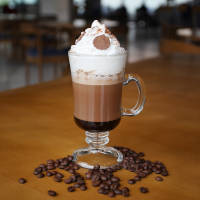

| Café | |
|---|---|
| Espécies e variedades | Coffe à arábica, Coffe à canephora e Coffe à liberica |
| Métodos de Preparo | Café coado, Café de percolador, Expresso, Café solúvel, Cafeteira italiana, Prensa francesa e Café turco |
| Bebidas com café | Affogato, BlackRussian, Caféamericano, Cafébombón, Café com leite, Caféfrappé, Café gelado, Caffè macchiato, Caffè mocha, Cappuccino, Galão, Garoto, Irish coffee, Kopi, Luwak, Latte, Lattemacchiato, Longblack, Moretta, Redeye, White Russian e Café da lgona |
| Substitutos | Orzo, Cevada eChicória |
Café Espresso
Um café expresso (do italiano caffè espresso), frequentemente referido simplesmente como expresso (ou ainda internacionalmente expresso), é um método de preparar café através da passagem de água quente (não fervente) sob alta pressão pelo café moído. O café expresso tradicional, em máquina industrial, é feito sob pressão de novecentos a mil quilopascals (nove a dez atmosferas ou bars), o que explica o termo expresso que aqui tem o sentido de exprimir ou espremer, ao contrário do que muitos pensam não tem originalmente o significado de rápido (este é apenas uma coincidência da automatização), portanto em uma tradução mais contextual o seu nome poderia ser café espremido e por isto muitos preferem manter o original em Italiano usando o termo expressoou café expresso.
Café Mocha

O nome dado a um tipo de grão de café com um sabor achocolatado, menor e mais redondo que a maioria dos outros tipos de grãos da espécie [Coffea arabica], nativa da Etiópia, mas originalmente cultivada no Iêmen e de lá exportado para oporto de Mocha, de onde deve ter vindo a associação do café expresso ao nome Mocha. Na Europa, café mocha pode ser referir tanto ao café com chocolate ou simplesmente ao café feito com grãos de mocha. O café Moca (Mocha) recebeu esse nome devido à cidade de Mocha, na costa do Mar Vermelho, no Iêmen, que no século quinze foi um importante exportador de café, especialmente para áreas ao redor da Península Ibérica.